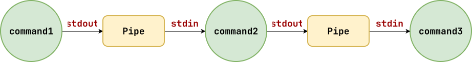

Logistics¶
- Extra Credit 01: Exam 01 corrections, and Shell customizations
Filters: Overview¶
Unix includes many utilities that perform the following:
-
Read data from standard input.
-
Perform some operation on the data.
-
Write results of operation to standard output.

We call these utilities filters since they transform their inputs in some manner. Additionally, we can combine multiple filters together to form pipelines.
Filters: Transformers / Selectors¶
| Filter | Description |
|---|---|
| tr | Translate from one set of characters to another |
| cut/awk | Extract portions from each line |
| grep | Search text using regular expressions |
| sed | Search and replace text using regular expresssions |
Filters: tr¶
tr allows us to translate from one set of characters to another set in a stream of text.
# Shell
$ TEXT='burn this city'
# Translate from a to x, from b to y, from c to z
$ echo $TEXT | tr abc xyz
yurn this zity
# Uppercase all letters
$ echo $TEXT | tr a-z A-Z
BURN THIS CITY
# Delete all spaces
$ echo $TEXT | tr -d ' '
burnthiscity
# Python
>>> text = 'burn this city'
# Translate from a to x, from b to y, from c to z
>>> text.translate(str.maketrans('abc', 'xyz'))
'yurn this zity'
# Uppercase all letters
>>> text.upper()
'BURN THIS CITY'
# Delete all spaces
>>> text.replace(' ', '')
'burnthiscity'
Filters: cut/awk¶
cut and awk allow us to extract portions from each line in a stream of text.
# Shell
$ TEXT='burn this city'
# Extract first field of each line
$ echo $TEXT | cut -d ' ' -f 1
$ echo $TEXT | awk '{print $1}'
burn
# Extract first and third fields of each line
$ echo $TEXT | cut -d ' ' -f 1,3
$ echo $TEXT | awk '{print $1, $3}'
burn city
# Extract 2nd through 4th characters of each line
$ echo $TEXT | cut -c 2-4
urn
# Python
>>> text = 'burn this city'
# Extract first field of each line
>>> text.split()[0]
burn
# Extract first and third fields of each line
>>> ' '.join([text.split()[0], text.split()[2]])
'burn city'
# Extract 2nd through 4th characters of each line
>>> text[1:4]
urn
Filters: Grep¶
grep allows us to search streams of text using regular expressions.
# Shell: Find all five letter words that
# begin with a or o and end with the same letter.
$ cat /usr/share/dict/words \
| grep -E '^([ao]).{3}\1$'
aloha
alpha
ameba
aorta
arena
aroma
atria
outdo
outgo
# Python: Find all five letter words that
# begin with a or o and end with the same letter.
path = '/usr/share/dict/words'
rx = r'^([ao]).{3}\1$'
with open(path) as stream:
for line in stream:
if m := re.search(rx, line):
print(m[0])
Filters: Sed¶
sed allows us to modify streams of text using regular expressions.
# Shell: replace all numbers in IP address with
# a single x
$ cat /etc/hosts | sed -E 's/[0-9]{1,3}/x/g'
...
x.x.x.x weasel
x.x.x.x banshee
x.x.x.x xavier
x.x.x.x momo
# Python: replace all numbers in IP address with
# a single x
path = '/etc/hosts'
rx = r'[0-9]{1,3}'
with open(path) as stream:
for line in stream:
print(re.sub(rx, 'x', line), end='')
Example: tmnt.py¶
Given the file tmnt.txt, which contains:
Leonardo blue katana
Donatello purple bo
Raphael red sai
Michelangelo orange nunchucks
-
List only the colors of the turtles.
-
List only the turtles whose names end in lo.
-
List the weapons that don't end with a vowel.
#!/usr/bin/env python3
import os
import re
path = 'tmnt.txt'
# 1. List only the **colors** of the turtles.
os.system(f"cat {path} | awk '{print $2}'")
with open(path) as stream:
for line in stream:
print(line.split()[1])
# 2. List only the **turtles** whose names end in lo.
os.system(f"cat {path} | awk '{print $1}' | grep -E 'lo$'")
with open(path) as stream:
for line in stream:
turtle = line.split()[0]
if turtle.endswith('lo'):
print(turtle)
# 3. List the **colors** that don't end with a vowel.
os.system(f"cat {path} | awk '{print $3}' | grep -E '[^aeiou]$'")
with open(path) as stream:
for line in stream:
weapon = line.split()[2]
if m := re.search(r'[^aeiou]$', weapon):
print(weapon)
Filters: Aggregators¶
| Filter | Description |
|---|---|
| head | Display first lines |
| tail | Display last lines |
| wc | Count words, lines, or bytes |
| uniq | Remove duplicates |
# Shell
# List first three lines of /etc/hosts
$ cat /etc/hosts | head -n 3
# List last three lines of /etc/hosts
$ cat /etc/hosts | tail -n 3
# Print total number of lines in /etc/hosts
$ cat /etc/hosts | wc -l
# Print total number of unique lines in /etc/hosts
$ cat /etc/hosts | sort | uniq | wc -l
# Python
>>> with open('/etc/hosts') as stream:
lines = stream.readlines()
# List first three lines of /etc/hosts
>>> ''.join(lines[:3]
# List last three lines of /etc/hosts
>>> ''.join(lines[-3:])
# Print total number of lines in /etc/hosts
>>> len(lines)
# Print total number of unique lines in /etc/hosts
>>> len(set(lines))
Example: cse-curriculum.py¶
Given the Computer Science Curriculum (yld.me/mbfL):
-
How many
MATHvsPHYSvsCSEcourses? -
How many sophomore
CSEcourses?
#!/usr/bin/env python3
import os
import re
import requests
URL = 'https://yld.me/mbfL'
# 1. How many MATH vs PHYS vs CSE courses?
os.system(f"""
curl -sL {URL} \
| grep -Eo '(MATH|PHYS|CSE) [0-9]{5}' \
| awk '{print $1}' \
| sort | uniq -c
""")
response = requests.get(URL)
counts = {}
for line in response.text.splitlines():
for department in re.findall(r'(MATH|PHYS|CSE) [0-9]{5}', line):
counts[department] = counts.get(department, 0) + 1
for department, count in sorted(counts.items()):
print(f'{count:>7} {department}')
# 2. How many sophomore CSE courses?
os.system(f"""
curl -sL {URL} \
| grep -Eo 'CSE 2[0-9]{4}' \
| awk '{print $1}' \
| wc -l
""")
response = requests.get(URL)
courses = re.findall(r'CSE 2[0-9]{4}', response.text, flags=re.MULTILINE)
print(len(courses))